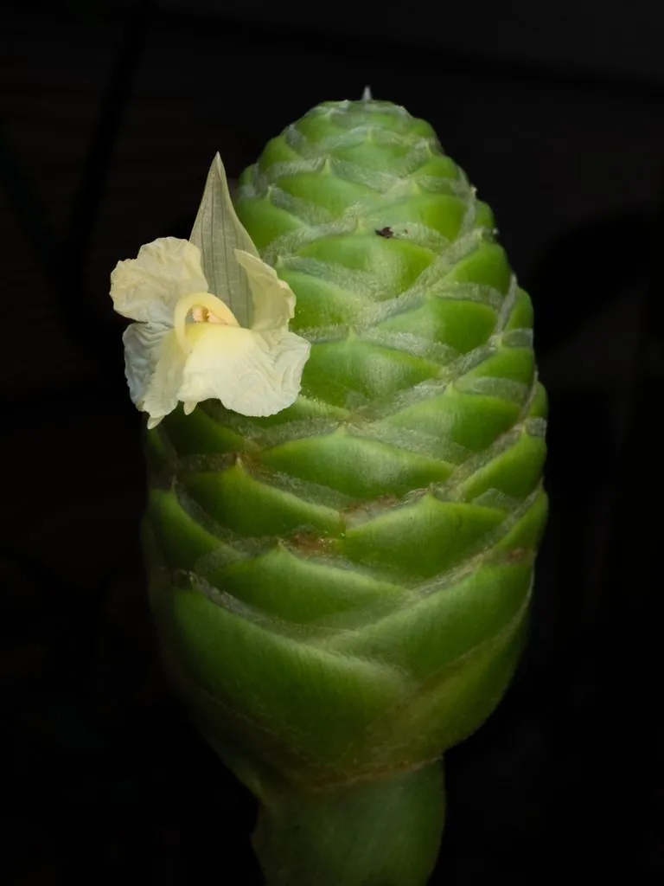

花卉与草本 · 植物界
红球姜 Zingiber zerumbet

姜科姜属多年生草本，花序呈松果状、苞片鲜红，花后苞片可持续观赏，根茎芳香，是热带庭园的特色观花植物。
- 分类
- 门被子植物门纲木兰纲目姜目科姜科属姜属
- 栖息环境
- 热带亚洲的林下与溪边，喜温暖湿润、半阴环境
- 地理分布
- 中国华南、云南及东南亚、印度等地
- 保护级别
- IUCN 暂无评估；分布较广，野生种群稳定
物种志
红球姜为多年生草本，高 1–2 米，具肉质根状茎，假茎由叶鞘包裹。叶片披针形，长 20–40 厘米，螺旋状排列。花序自根状茎抽出，呈松果状或圆锥形，长 10–15 厘米，苞片鲜红色、覆瓦状排列，花小、淡黄色，藏于苞片内；花后苞片由红转绿，仍可观赏。
本种原产热带亚洲，分布于中国华南、云南及东南亚、印度等地，生于林下与溪边，喜温暖湿润、半阴的环境。它花序形似松果、苞片鲜红，是热带庭园中独特的观花植物；根状茎芳香，含有姜烯等成分，在民间用于洗发、驱虫与药用，英文称 Shampoo Ginger。红球姜不耐寒，北方需温室栽培；其花后苞片可保持数月，是优良的观花观果材料。
形态与习性
- 株高1–2 米，假茎由叶鞘包裹
- 花期7–10 月，苞片鲜红色
- 花序松果状，长 10–15 厘米
- 光照喜半阴，忌强光暴晒
- 水分喜湿润，需充足浇水
- 土壤疏松肥沃、排水良好的壤土
- 主要用途庭园观赏、根茎药用与洗发
趣味知识
- 红球姜的花序像一颗红色的松果，花后苞片由红转绿，还能继续观赏。
- 它的根状茎富含芳香油，东南亚民间用其汁液洗发，因此英文名 Shampoo Ginger。
- 红球姜的红色部分同样是苞片，真正的花是藏在里面的淡黄色小花。
- 它原产热带亚洲，在中国华南的溪边林下常能见到野生植株。